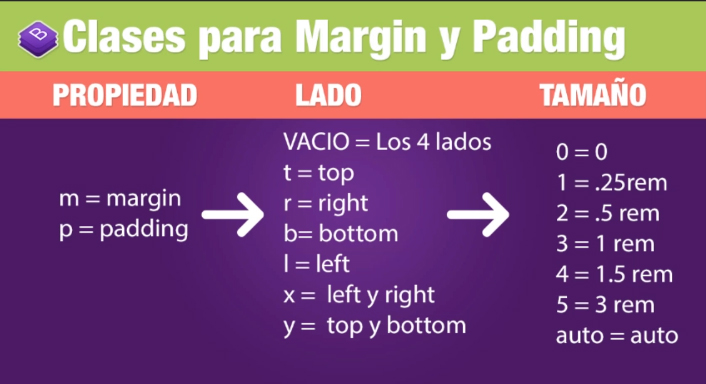

Clase 4: Espaciados
La biblia perdida de Bootstrap 4 - Erick Mines
Clases para margin y padding

Ejemplo para margin top 1 rem: mt-3
Ejemplo para padding top 1 rem: mt-3
Márgenes y padding responsive
Para definir márgenes y padding responsive usamos la siguiente estructura:
(Propiedad)(Lado)-(Contexto)-(Tamaño)
Ejemplo: my-sm-2 (margin top y bottom en sm de 1.5rem)
Este ejemplo con padding sería py-sm-2 (padding margin y top en sm de 1.5rem)